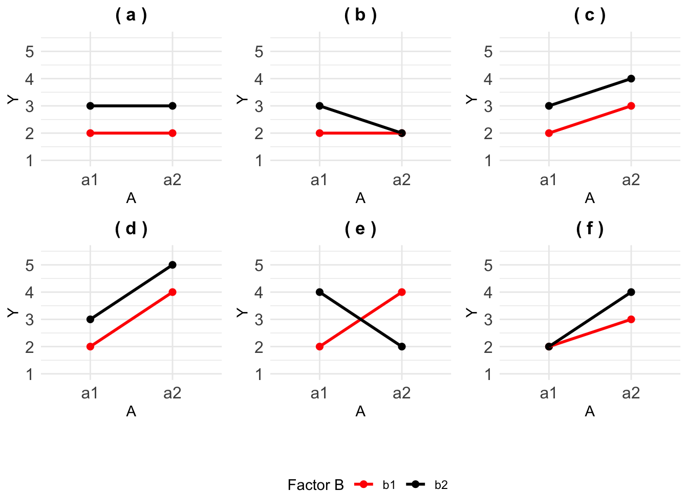

1 Interactions
Interactions between treatment factors are an important reason for conducting factorial experiments. If the effect of a factor would always be the same, no matter which other factors are present, and at what levels, it would be enough to investigate this factor on its own in a single-factor experiment. However, many factors interact with other factors, which means that the effects change, depending on the levels of the other factors.
Up until now, we have spoken rather loosely about ‘effects’. But at this point, we need to define more clearly what we mean by the effect of a treatment or the effect of an explanatory variable. By the effect of a treatment, we mean the change in response relative to either a reference or baseline treatment, or often in experiments, to an overall mean response.
In regression, the effect of a continuous explanatory variable is measured by the slope, which is the change in response for a one-unit increase in the explanatory variable, i.e., relative to one unit less. The effect of categorical or factor variables in regression is the change in response relative to a reference category.
In experiments, when using an ANOVA model, the effect of a treatment is mostly measured as the change in response relative to an overall mean response.
There are different kinds of effects: main effects, interaction effects, and random effects.
The main effect of a treatment measures the average change in response, averaged over all levels of the other factors, relative to the overall mean. When there is only a single factor in an experiment, we only have main effects.
If the effect of a factor depends on the level of another factor that is present, then the two factors interact. The interaction effect represents the change in response relative to the main effects with a particular treatment.
If there are multiple factors in an experiment, and the effects of one factor depend on the level of the other factor, i.e., the two factors interact, the (average) effects might not give a good idea of changes in the response, or of how the factors affect the response. In such cases, we need to study the individual treatments more closely. We look at the combinations of factor levels with large interaction effects.
The figure below illustrates a number of possible interaction situations in a \(2 \times 2\) factorial experiment, with treatment factor A having levels a1 and a2, and factor B having levels b1 and b2. To determine whether main effects of A are present, we must ask whether the average response changes when moving from a1 to a2, and similarly for main effects of B.
To determine whether interaction effects are present, we must ask whether the change in response when moving from a1 to a2 depends on the level of B. Main effects and interaction effects can both be present simultaneously.
Before we do anything, orient yourself. What is represented by each axis, how is the graph differentiating between treatment factors? In the figure below, the response is on the y-axis and we have the levels of treatment factor A on the x-axis, the levels of B are denoted by the colour of the line.
Let’s start with (a). The main effect of A is the average change in response - averaged over all levels of the other factors. Essentially, we need to determine what happens to the response when we ignore the levels of B. To do this, we have to calculate the average of the points at a1 and separately, at a2. When points in a line are eveny distributed, the average is the mid-point. If you do this for both levels of A and connect the dots, you will have drawn a flat horizontal line. Now, going from a1 to a2, what happens to the response? In other words, does the average response change? No, there is n change which means there is no main effect of factor A.
Going through the same motions for factor B, reveals that going from b1 to b2 increases the mean response. There is a main effect of factor B. What about an interaction effect? We ask: does the effect of A on the response change when we consider the levels of the other factor? now we do not avearge over the other factor, we take it into account. Looking at the plot, if we focus on the red line and go from a1 to a2, nothing happens to the response. If we focus on the black line, the same (i.e. nothing) happens to the response as well. If we reverse this and focus on the points at a1, going from b1 (red) to b2 (black) increases the response. At a2, the response increases as well by the same amount. So nothing changed when we considered the other factors, there is no interaction.
Now, consider plot (e).
- Averaging the response at a1 and a2 results in a horizontal line again. No main effect of factor A.
- Averaging the response at b1 and b2, leads to the same conclusion as before. Going from b1 to b2, increases the response. There is a main effect of factor B.
- If we focus on the red line (b1), going from a1 to a2 increases the response. However, at b2, going from a1 to a2 decreases the response! The effect of treatment factor A depends on the level of B, they interact with each other.
So does this mean that A and B have no effect on the response? No, they both affect the response, their effects, however, depend on the level of the other factor present.
Plot (e) demonstrates clearly why sometimes main effects cannot be understood or interpreted when interactions are present. In such a case, the interaction plot is very helpful to illustrate the effects. Try deciding for the other plots whether there are main effects for factor A and B and whether A and B interact. The answers are given in the figure caption.
Interaction effects are calculated as the difference between the treatment mean and the sum of the main effects. To express this more precisely, it is useful to write down the model.
2 Can going for a brief walk help with memory performance?
We often hear about the benefits of exercise for physical health, but what about its impact on learning and memory? Would taking a brisk 10-minute walk before studying help us to remember more?
Researchers set out to explore this question by testing whether a short bout of exercise before learning could enhance memory performance. They had students either walk or sit before studying a list of words and then predict how well they would remember them. Later, the students took a recall test to see how much they actually retained.
Before studying, some students took a 10-minute brisk walk, while others remained seated and inactive. After this, everyone studied a list of words and rated how well they thought they would remember them (Judgements of Learning, or JOLs). Later, they took a free recall test to see how many words they actually remembered. The researchers wanted to find out if walking before studying could boost memory and whether students were aware of any benefits.
Salas, Carlos R, Katsumi Minakata, and William L Kelemen. 2011. “Walking Before Study Enhances Free Recall but Not Judgement-of-Learning Magnitude.” Journal of Cognitive Psychology 23 (4): 507–13.